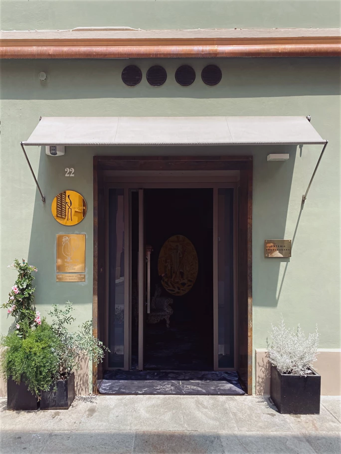
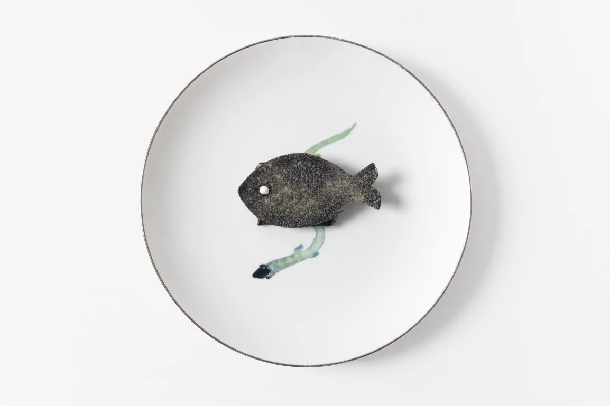
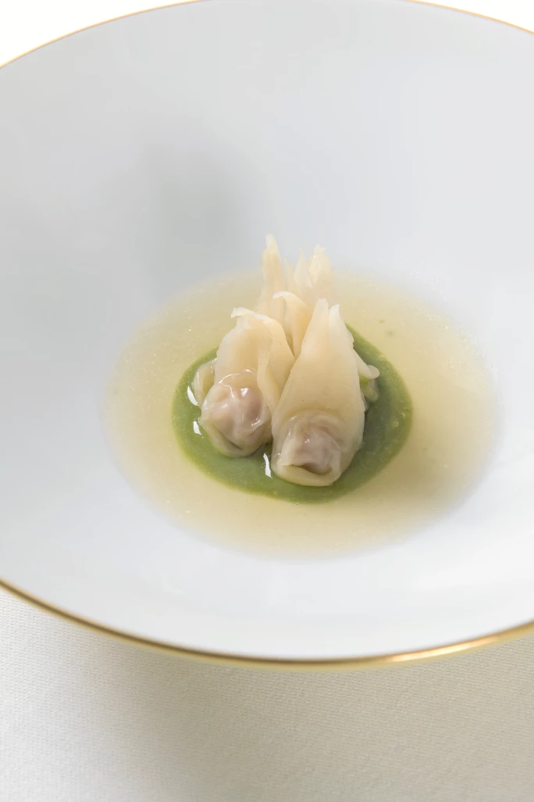

Sotheby's · 2023年11月15日
珍饈：陳泰銘環球心水餐廳精選
網站： osteriafrancescana.it
地址： Via Stella, 22, 41121 Modena MO, Italy
60歲的Massimo Bottura在餐飲界無人不曉，名滿天下的他卻一直紮根家鄉，從未真正離開。Bottura在摩德納出生，現今仍住在當地。這位義大利國寶級大廚說自己的烹調靈感來自祖母Ancella：「小時候我總是在祖母身旁，圍著廚桌打轉。」在摩德納歷史最悠久的城區，Bottura的米其林三星餐廳糅合創意與傳統，為食客呈現前所未有的餐飲體驗。

Osteria Francescana 餐廳入口
1986年，Bottura開了一家簡樸的小餐館，展開了他的廚神之路。當時他已將法國高級菜的規則應用在當地菜餚中，但仍不斷力求精進；他在1994年賣掉生意，前往蒙地卡羅向Alain Ducasse學藝，又曾在充滿傳奇色彩的El Bulli工作，與Ferran Adrià共事。1995年，Bottura學成歸國，開設Osteria Francescana，銳意重新研發地道美食，為家喻戶曉的傳統菜餚注入新意。
他擅長利用香醋、帕馬火腿、肉腸、義大利餛飩湯（Bottura說這是母親以前給他做的菜，他會選擇它為最後一餐）和帕馬森芝士等艾米利亞·羅馬涅（Emilia-Romagna）地區名物，烹調出各種招牌菜，例如名為「哎呀，檸檬撻掉地上了」（Oops, I Dropped the Lemon Tart）的甜品。帕馬森芝士是他的最愛，他用五種手法處理熟成時間介乎24至50個月的帕馬森芝士，其溫度和口感各異，呈現出慕斯、煎餅和梳乎厘的質感。他說這道菜「呈現不同的白色調」，「以不同技術深入探索食材和概念。這道菜以風土特色為本，同時邁向未來。」
「文化是我們的動力。我的靈感來自藝術、音樂、歷史和文學。」
Bottura擅長以全新面貌呈現日常食材，同時向地區傳統致意。他的靈感來自家人、其他大廚和各個領域的藝術家。他說：「文化是我們的動力，我的靈感來自藝術、音樂、歷史和文學，我重視深層的味道和意義。」以墨魚汁和黑鱈魚製成的菜餚「黑對黑」（Black on Black）是向已故偉大爵士鋼琴家Thelonious Monk致敬，而「迷彩」（Camouflage）是卡士達醬配燉野兔肉，向畢加索致敬。

Ho bruciato una sardina（燒焦沙丁魚）
至於酒單，與其說它是一份精選佳釀的名單，它更像是一本大開本精裝書。以一間著名高級餐廳而言，酒款選擇多是意料之中，但內容卻令人意想不到。Osteria Francescana的酒單不拘一格，既有世界級名釀，亦有高級餐廳一般不會提供的酒款。艾米利亞·羅馬涅大區盛產氣泡酒，Bottura的侍酒師Giuseppe Palmieri亦採購了大量優質義大利氣泡酒。雖然餐廳亦有提供Krug、Pol Roger和Cristal的年份香檳，但義大利氣泡酒所佔的頁數比法國的來得多。更令人印象深刻的是，酒單上還有Cantina della Volta和來自摩德納的Marco Gozzi藍布魯斯可（Lambrusco)。這款氣泡酒在很長一段時間裡不受待見，但這些酒莊令它捲土重來、再度興起。亦有與倫巴底（Lombardy）大區接壤的Colli Bolognesi和Colli Piacentini的葡萄酒。這些佳釀鮮為人知，價格不但相宜得令人吃驚，而且非常百搭，既適合搭配Bottura的精緻佳餚，也可搭配簡單的本土小菜。

Tortellini che camminano sul brodo（上湯餃子）
Bottura的烹調概念一開始備受艾米利亞·羅馬涅地區的傳統主義者白眼，不過後來情況逆轉。他曾說：「一場大革命正在義大利發生，而我是這場革命的一部分。我全情投入，但革命並不容易，因為義大利就像一個露天博物館，我們有兩千年歷史，人們非常守舊。如果想改變一些事情，會很複雜困難。」也許他說得沒錯，但他在烹飪和社區上所花上的努力，最終修成正果。
除了摘下米其林星星、常年出現在世界50最佳餐廳名單上（更在2016年和2018年排名第一）之外，Bottura還成立了非牟利組織「Food for Soul」，並獲得米芝蓮綠星。他將餐廳、市場和超市送來的剩餘食材製成營養豐富的餐點，提供給弱勢社群。他說：「我們的目標是證明這種方法行之有效，能夠改善人類生活和糧食生態系統。我們要讓大家吃飽，對抗浪費。」
Bottura出身於一個不浪費、不丟棄的家庭，他的祖母十分節儉，擅長利用剩餘食材，而他主理的餐廳亦遵守同一原則。Bottura非常著重食物和美酒的情感牽連，相信每道菜總有一兩個元素，能與客人的成長背景和身份認同扣連。這種飲食與情感的聯繫，相信侍酒師Palmieri的酒單上每款佳釀所來自的酒莊和釀酒師都會深感認同。
相片：Courtesy of Osteria Francescana, Paolo Terzi